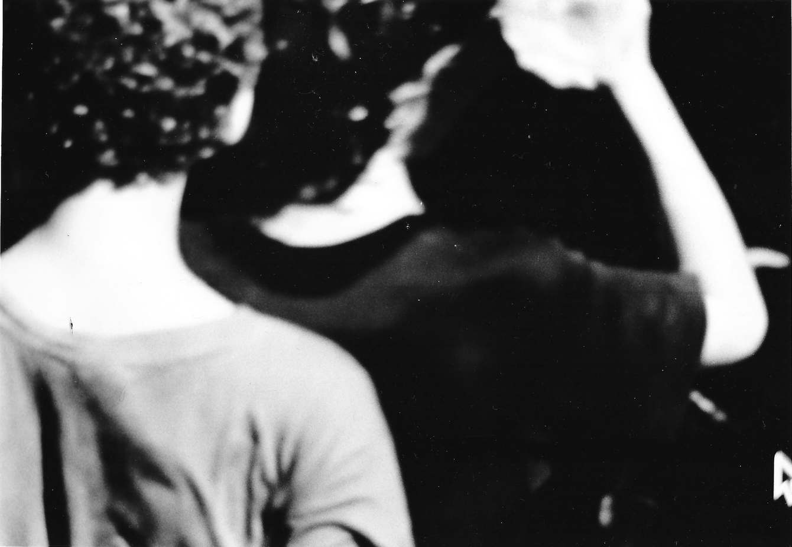
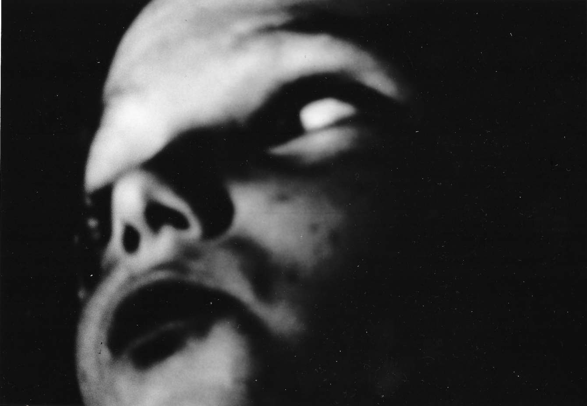
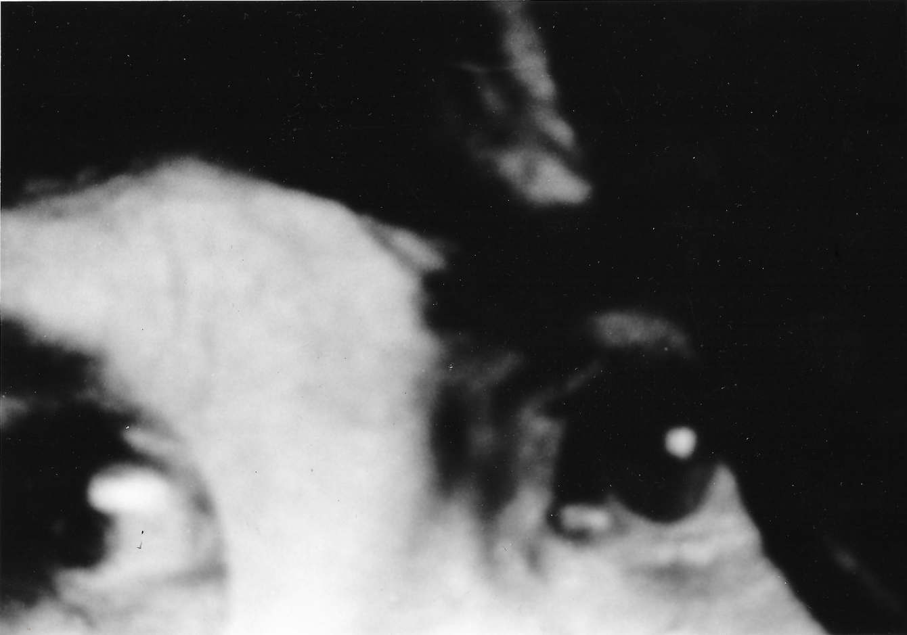

this 35mm photography series is composed of captured details of the movie screen. It plays with the idea of appropriating media and stripping the pictures of their original emotional intensity and significance by means of mass production. It also depicts the artist's periodic obsession with cinema by blurring the line of reality and fiction, coming from the viewpoint of the coexistence of a photographer and an addictive consumer of popular culture.